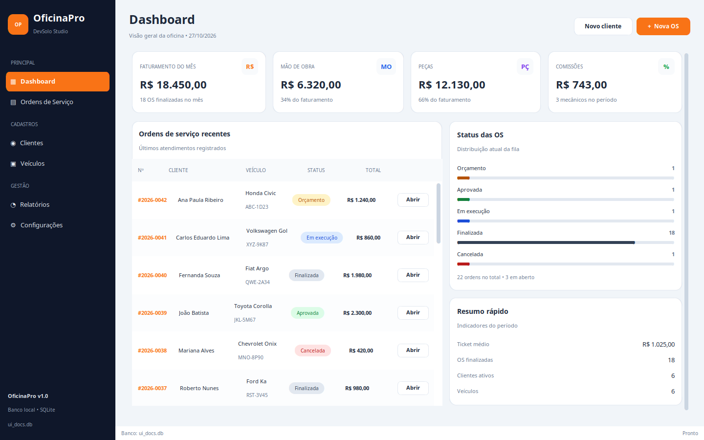
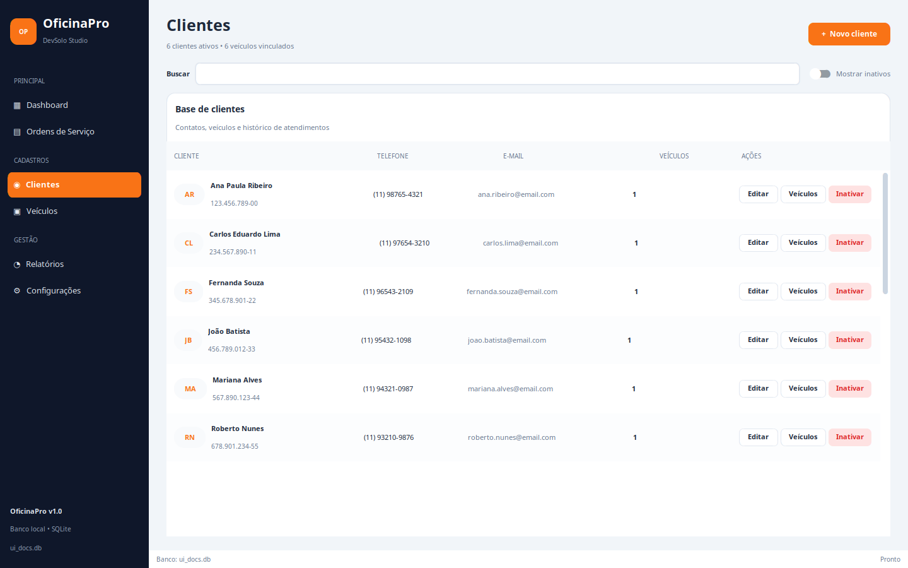
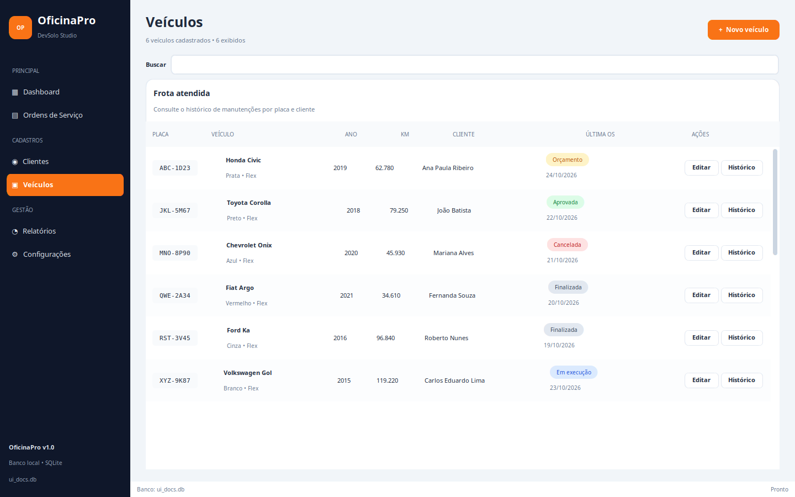
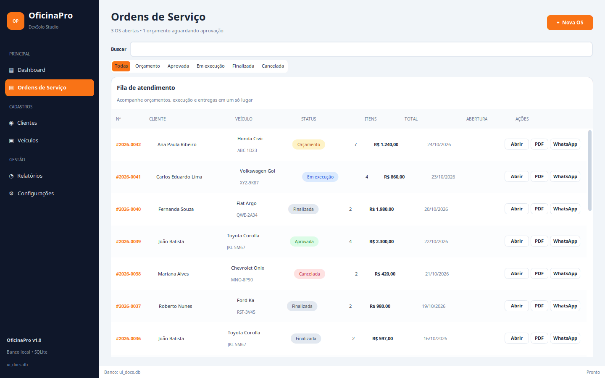
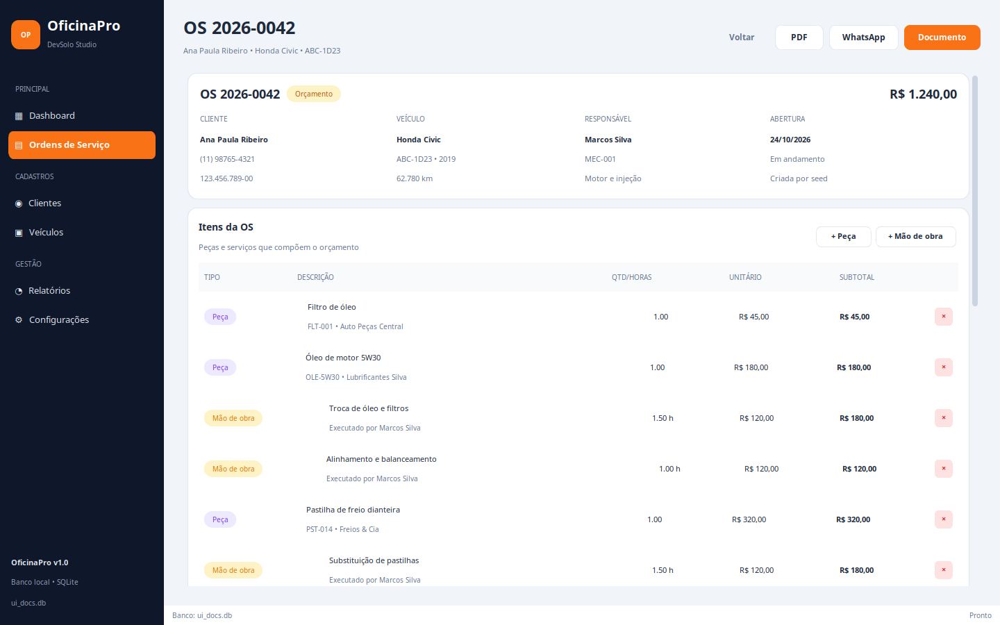
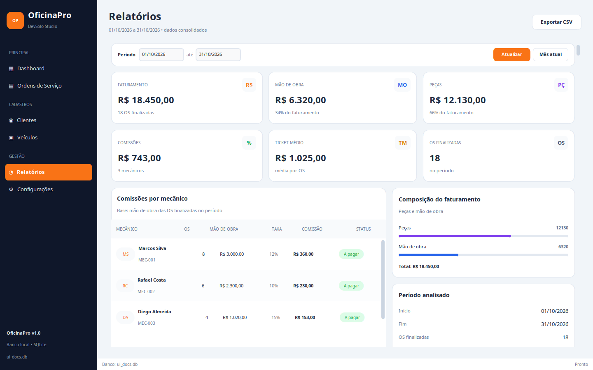
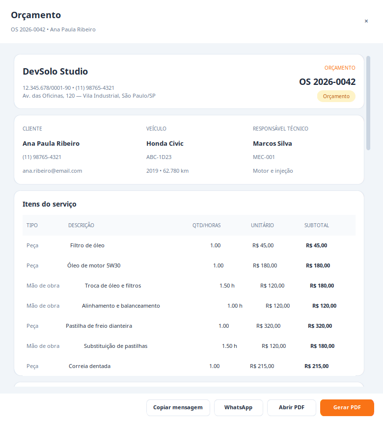

Aplicação desktop em CustomTkinter integrada ao núcleo da Etapa 3: cadastros, ordens de serviço, orçamento em PDF, WhatsApp, relatórios e backup — com validação de execução e 28 testes automatizados.
O OficinaPro nasceu como um sistema de gestão para uma oficina mecânica de bairro. A Etapa 1 delimitou o problema; a Etapa 2 consolidou a modelagem, os wireframes e o protótipo navegável; a Etapa 3 entregou o núcleo executável, com domínio, persistência SQLite, serviços, PDF, WhatsApp e testes. A Etapa Final fecha o ciclo: transforma o contrato visual da Etapa 2 em uma interface desktop funcional, conectada aos mesmos serviços e repositórios já validados.
O resultado é o OficinaPro v1.0, executado por python3 main.py, com interface CustomTkinter como modo padrão e painel CLI como alternativa e fallback.
1.2 Objetivo da Etapa Final
O objetivo é entregar uma aplicação completa, demonstrável e documentada, sem duplicar regras de negócio:
Objetivo
Resultado
Interface desktop
Pacote ui/ com tema, componentes, diálogos e sete telas
Integração real
AppContext injeta banco, repositórios e serviços nos controladores de tela
Dashboard, relatórios por período, comissões, backup e configurações
Entrada unificada
python3 main.py abre a UI; --cli mantém o terminal; --ui força a interface
Qualidade
28 testes automatizados, compilação integral e validação de execução da UI
Documentação
Relatório final, capturas reais, slides e instruções de execução
1.3 Escopo entregue
Telas: Dashboard, Clientes, Veículos, Ordens de Serviço, Editor da OS, Relatórios e Configurações.
Diálogos: cliente, veículo, mecânico, nova OS, item de peça, item de mão de obra, prompt de finalização/cancelamento e visualização de orçamento/recibo.
Ações: busca, filtros, cadastro, edição, inativação/reativação, transições de status, desconto, PDF, WhatsApp, CSV, backup e restauração.
Documentos: orçamento e recibo em PDF com identidade visual do projeto.
Operação: seed demonstrativa, banco local, fallback CLI e encerramento seguro da conexão.
2. Visão geral da entrega
2.1 O que mudou em relação à Etapa 3
A Etapa 3 já possuía o núcleo. A Etapa Final acrescentou a camada de apresentação e o acabamento de produto:
Área
Etapa 3
Etapa Final
Entrada
Painel CLI
UI CustomTkinter padrão, CLI preservado
Cadastros
Serviços e repositórios
Telas com busca, formulários e soft delete
OS
Serviço e regras
Lista filtrável e editor completo
Documentos
PDF via serviço
Visualização de orçamento/recibo e ações
Relatórios
Serviço de relatório
Dashboard e tela de relatórios com CSV
Configuração
Serviço de backup
Aba de oficina, equipe, backup e sistema
Validação
28 testes
28 testes + execução real da interface
2.2 Princípio de projeto
A interface é uma camada de composição. Ela não recalcula totais, não altera status diretamente e não escreve SQL. Toda operação passa por OrdemServicoService, OrcamentoService, RelatorioService, ConfiguracaoService ou pelos repositórios especializados. Isso preserva as invariantes da Etapa 3 e permite que CLI e UI compartilhem o mesmo comportamento.
Figura 1 — Arquitetura preservada: a interface consome os serviços de aplicação, que orquestram domínio e repositórios.
2.3 Entrada e modos de execução
python3 main.py # UI (fallback para CLI se Tkinter/CustomTkinter faltar)
python3 main.py --ui # força a UI e falha com diagnóstico se indisponível
python3 main.py --cli # painel CLI
python3 main.py --demo # modelo em memória (2 clientes, 2 veículos e 2 OS)
O fluxo padrão cria/abre o banco, executa a seed quando necessário, fecha a conexão de preparação e abre a janela. Se a importação de tkinter/customtkinter falhar, o sistema exibe uma mensagem e cai no painel CLI; com --ui, o erro é explícito. Essa decisão mantém o projeto demonstrável em ambientes headless e em laboratórios sem dependências gráficas. O caminho do banco pode ser trocado com --db.
3. Arquitetura da interface
3.1 Organização do pacote ui/
Arquivo
Responsabilidade
ui/app.py
Janela principal, sidebar, navegação, ações globais e notificações
ui/context.py
Montagem do banco, repositórios e serviços usados pela UI
ui/theme.py
Paleta, fontes e estilos de status
ui/components.py
Cards, tabelas, cabeçalhos, badges, indicadores e botões
ui/dialogs.py
Formulários e diálogo de orçamento/recibo
ui/utils.py
Formatação, conversão, abertura de arquivos/URLs e helpers
ui/screens/
Dashboard, clientes, veículos, ordens, editor, relatórios e configurações
As telas recebem app no construtor e acessam app.context. Não há singleton global nem criação de repositórios dentro de eventos de botão. O encerramento da janela chama context.fechar(), que fecha a conexão SQLite.
3.3 Navegação
A sidebar mantém a seção ativa em laranja e reutiliza instâncias de tela. show_screen(nome, **kwargs) cria a tela sob demanda, chama on_show() e delega filtros contextuais:
Clientes → Veículos abre a frota filtrada pelo cliente;
Veículos → Histórico abre a lista de OS filtrada pelo veículo;
Nova OS abre o editor da OS recém-criada;
Voltar retorna à fila de ordens.
refresh_screens() atualiza a tela visível após mutações e deixa as demais para a próxima navegação, sem recriar a janela. Uma falha em uma tela não derruba as demais.
3.4 Tema e componentes
O tema reproduz a linguagem visual da Etapa 2: sidebar escura (#0F172A), fundo claro (#F1F5F9), cartões brancos, bordas suaves e laranja (#F97316) como cor de ação. Os status usam badges consistentes:
Status
Cor
Orçamento
âmbar
Aprovada
verde
Em execução
azul
Finalizada
cinza
Cancelada
vermelho
Os componentes reutilizáveis (Card, PageHeader, DataTable, StatCard, Badge, SectionHeader, SummaryRow, ProgressLine) evitam repetição e mantêm espaçamento, tipografia e estados visuais uniformes.

Figura 2 — Dashboard com indicadores do mês, ordens recentes, distribuição por status e resumo rápido.
4. Experiência do usuário
4.1 Dashboard
O dashboard é a primeira tela após a abertura. Ele responde às perguntas centrais do gestor:
quanto foi faturado no mês;
quanto é mão de obra e quanto é peça;
quanto há de comissões;
quantas OS estão em cada status;
quais são as ordens mais recentes.
Os valores são calculados por RelatorioService e OrdemServicoService.resumo_dashboard(), não pela tela. Os cartões usam StatCard; a lista recente usa DataTable; o painel de status usa ProgressLine.
4.2 Cadastros e frota
A tela de Clientes oferece busca por nome, telefone, CPF/CNPJ ou e-mail, alternância para mostrar inativos e ações de editar, abrir veículos, inativar ou reativar. O cadastro valida documento e telefone no domínio; a UI apenas coleta e apresenta erros.
A tela de Veículos consulta a frota por placa, marca, modelo ou cliente. Cada linha mostra veículo, ano, quilometragem, cliente, status/data da última OS e ações de edição e histórico. O filtro por cliente é contextual: ao chegar de Clientes, a tela exibe apenas os veículos daquele contato e oferece “Limpar filtro”.
4.3 Operação
A fila de ordens combina busca textual (número, cliente, placa, marca ou modelo) com segmentação por status. O cabeçalho resume OS abertas e orçamentos aguardando aprovação. Cada linha permite abrir a OS, gerar PDF ou abrir o WhatsApp.
O editor da OS concentra o ciclo operacional:
resumo do cliente, veículo, responsável, abertura e total;
itens de peça e mão de obra com tipo, descrição, quantidade/horas, unitário e subtotal;
remoção de itens e aplicação de desconto enquanto a OS está em orçamento;
observações editáveis;
histórico append-only de status;
ações de PDF, WhatsApp e documento;
transições de aprovar, iniciar, finalizar e cancelar.
As ações só aparecem quando permitidas pelo status. A finalização solicita a quilometragem de saída; o cancelamento exige motivo. O histórico é exibido em ordem cronológica e inclui usuário e motivo quando existirem.

Figura 3 — Clientes com busca, situação ativa/inativa e acesso direto à frota.

Figura 4 — Frota atendida, com última OS, quilometragem e acesso ao histórico.

Figura 5 — Fila de atendimento com busca, filtro por status e ações rápidas.

Figura 6 — Editor da OS 2026-0042 com itens, totais, status e ações contextuais.
4.4 Relatórios
A tela de relatórios permite escolher o período, voltar ao mês atual e exportar comissões em CSV. Ela apresenta faturamento, mão de obra, peças, comissões, ticket médio, quantidade de OS, comissões por mecânico e composição do faturamento. Os dados vêm de RelatorioService.resumo_formatado(); a UI apenas formata e desenha.

Figura 7 — Relatórios do período com comissões por mecânico e composição do faturamento.
4.5 Configurações
A tela é dividida em quatro abas:
Aba
Conteúdo
Oficina
nome, CNPJ, telefone, endereço, taxa horária e comissão padrão
A aprovação exige ao menos um item e total maior que zero.
O início só é permitido a partir de APROVADA.
A finalização atualiza a quilometragem do veículo e não permite redução.
O cancelamento é permitido em orçamento, aprovada ou em execução e exige motivo.
FINALIZADA e CANCELADA são terminais.
5.3 Orçamento e recibo
O diálogo de documento monta uma prévia com dados da oficina, cliente, veículo, responsável, itens, totais, desconto, observações e histórico. O título muda de “Orçamento” para “Recibo” quando a OS está finalizada. As ações disponíveis são:
Copiar mensagem — texto de WhatsApp;
WhatsApp — link wa.me;
Abrir PDF — gera sob demanda e abre o arquivo;
Gerar PDF — grava em orcamentos/OS-<numero>.pdf.

Figura 12 — Prévia do orçamento com identidade visual, itens e ações de PDF/WhatsApp.
6. Integração com o núcleo
6.1 Regras preservadas
A UI não reimplementa nenhuma regra. Exemplos:
Ação da UI
Serviço/Repositório
Criar OS
OrdemServicoService.criar_ordem()
Adicionar peça
OrdemServicoService.adicionar_peca()
Adicionar mão de obra
OrdemServicoService.adicionar_mao_de_obra()
Aplicar desconto
OrdemServicoService.aplicar_desconto()
Aprovar/iniciar/finalizar/cancelar
métodos de transição do serviço
Gerar PDF/WhatsApp
OrcamentoService
Relatórios/CSV
RelatorioService
Backup/restauração
ConfiguracaoService
Busca/filtros
repositórios especializados
6.2 Persistência e seed
O banco é criado em infrastructure/migrations.py com PRAGMA user_version = 1. A seed reproduz os totais da Etapa 2 e é carregada automaticamente quando o banco está vazio. As operações da UI usam transações dos repositórios; o histórico de status é append-only.
6.3 CLI preservado
O painel CLI continua disponível em python3 main.py --cli e é usado como fallback. Ele compartilha os mesmos repositórios e serviços, o que permite demonstrar o sistema mesmo sem interface gráfica.
6.4 Conformidade com os requisitos de POO
A tabela abaixo conecta cada exigência da atividade aos elementos implementados. As referências de linha correspondem ao código entregue; os testes ficam em tests/.
python3 main.py --demo instancia 2 clientes, 2 veículos, 1 mecânico e 2 OS, exercitando o ciclo de vida
saída do comando --demo
Composição
ordem_servico.py:271
A OS é dona dos itens; o item só existe no agregado e a remoção passa por remover_item
test_totais_e_desconto
Enumeração
status_os.py:10
StatusOS(str, Enum) com cinco estados, from_value, rotulo e terminal
test_ciclo_completo_e_historico
A interface reaproveita o mesmo desenho: BaseScreen e FormDialog são classes base com comportamento comum, e as telas e diálogos concretos apenas especializam o conteúdo.
A interface foi executada em ambiente com Python 3.14.4, Tk 8.6 e CustomTkinter 6.0.0 (versão fixada em requirements-ui.txt), em janela de 1440 × 900. Foram capturadas as telas e diálogos apresentados neste relatório. Além da inspeção visual, um roteiro de integração exercitou os fluxos reais:
#
Fluxo validado
Resultado
1
Cadastro de cliente
OK
2
Cadastro de veículo vinculado
OK
3
Cadastro de mecânico
OK
4
Abertura de OS
OK
5
Inclusão de peça e mão de obra
OK
6
Desconto e recálculo
OK
7
Aprovação, início e finalização
OK
8
Geração de PDF e cópia da mensagem
OK
9
Abertura do link WhatsApp
OK
10
Cancelamento com motivo
OK
11
Inativação/reativação de cliente e mecânico
OK
12
Exportação CSV
OK
13
Backup e restauração
OK
14
PDF/WhatsApp pela janela principal
OK
O roteiro criou as OS 2026-0043 (finalizada) e 2026-0044 (cancelada) em banco temporário, sem alterar a base demonstrativa do projeto.
7.4 Evidências visuais
As capturas em docs/final/capturas/ foram geradas a partir da aplicação em execução, não de mockups. Elas cobrem dashboard, cadastros, lista e editor de OS, relatórios, abas de configuração e diálogos principais.
8. Dados demonstrativos e resultados
A seed mantém os totais da Etapa 2:
Indicador
Valor
Faturamento
R$ 18.450,00
Mão de obra
R$ 6.320,00
Peças
R$ 12.130,00
Comissões
R$ 743,00
Ticket médio
R$ 1.025,00
OS finalizadas
18
OS totais
22
Mecânico
OS
Mão de obra
Taxa
Comissão
Marcos Silva
8
R$ 3.000,00
12%
R$ 360,00
Rafael Costa
6
R$ 2.300,00
10%
R$ 230,00
Diego Almeida
4
R$ 1.020,00
15%
R$ 153,00
A base também contém OS em orçamento, aprovada, em execução e cancelada, permitindo demonstrar todos os estados e ações da interface.
A aplicação é desktop e local; não há autenticação, perfis ou sincronização entre máquinas.
O controle de pagamento de comissões é apenas informativo (“A pagar”); não há baixa financeira.
O PDF depende de Chrome/Chromium headless instalado no sistema.
A interface exige Tkinter/CustomTkinter; em ambiente headless o sistema cai no CLI.
Não há controle de estoque, agenda de oficina ou emissão fiscal.
Os testes da UI são de integração manual/automatizada local; não há suíte de testes visuais.
10.2 Próximos passos
Registrar pagamentos de comissões e fechar o ciclo financeiro.
Adicionar estoque de peças e alertas de mínimo.
Criar agenda de serviços e previsão de entrega.
Empacotar com PyInstaller para distribuição.
Avaliar alternativas de geração de PDF que não dependam de navegador.
Adicionar autenticação e trilha de auditoria por usuário.
Ampliar testes automatizados de interface com uma ferramenta dedicada.
11. Conclusão
O OficinaPro v1.0 cumpre o contrato construído ao longo do semestre. A Etapa 2 definiu a modelagem e a linguagem visual; a Etapa 3 entregou o núcleo executável; a Etapa Final conectou esse núcleo a uma interface desktop completa, sem duplicar regras e sem alterar o contrato original.
A aplicação permite operar o ciclo completo de uma oficina — do cadastro ao orçamento, da execução ao recibo, do relatório ao backup — com dados demonstrativos consistentes, documentos em PDF, integração com WhatsApp e validação de execução. O resultado é um produto acadêmico coeso, demonstrável e preparado para evoluções futuras.
OficinaPro v1.0 • DevSolo Studio
Juan Carlos Matos • Entrega final • 19/11/2026
12. Referências
OFICINAPRO. Etapa 2 — Modelagem e Interfaces. DevSolo Studio, 2026. Disponível em docs/etapa2/.
OFICINAPRO. Etapa 3 — Implementação do Núcleo. DevSolo Studio, 2026. Disponível em docs/etapa3/.